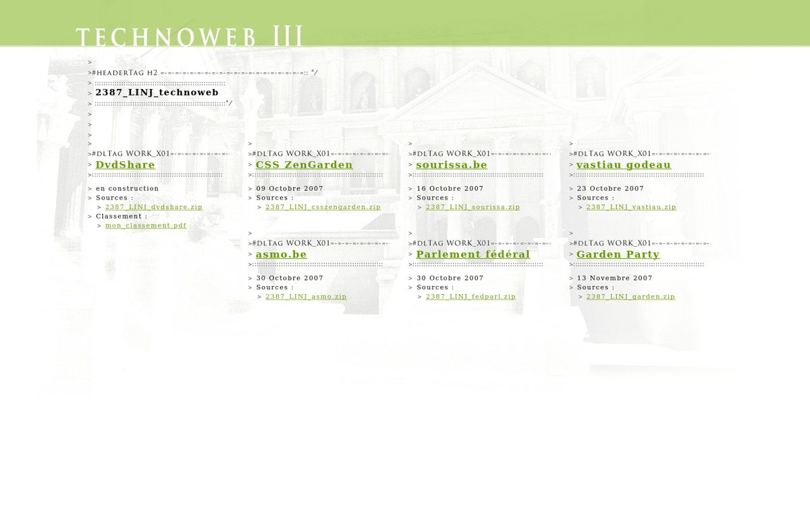
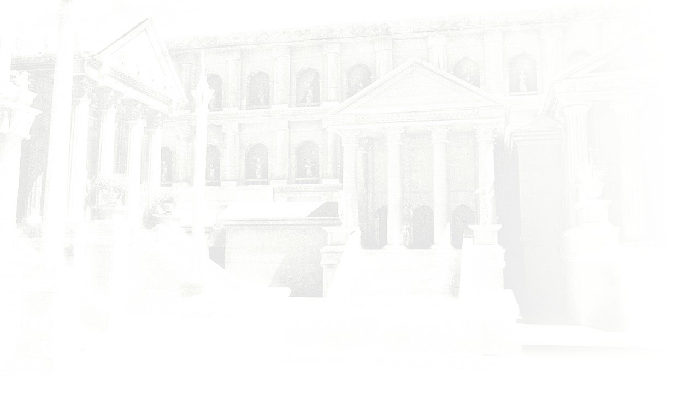

Éditeur
- édité par John Linotte, à titre privé, depuis Bruxelles ;
- aucune activité commerciale : rien n'y est vendu, aucun service n'y est offert ;
- contact : [email protected].
Hébergement
- Cloudflare Pages (Cloudflare, Inc.).
Licences
- les textes sont © John Linotte ;
- les traces de fabrication attachées aux publications sont sous licence CC BY 4.0.
Fabrication & divulgation IA
- les billets du Carnet sont rédigés avec l'assistance d'un système d'intelligence artificielle opéré par l'auteur ;
- chaque publication est relue et publiée sous son contrôle éditorial, et l'indique en pied de page.
Fabrication visuelle
- la palette tient en trois couleurs :
pierre :
oklch(96.5% 0.004 255); encre :oklch(27% 0.012 255); mousse :oklch(56% 0.14 132); - le vert mousse est une signature qui court depuis 2007 — il descend du
#690de technoweb3, premier site de l'auteur ; - le filigrane architectural, présent sur toutes les pages, est un rendu 3D du Forum Romain réalisé par l'auteur en 2006 — il était déjà le filigrane de technoweb3 en 2007 ;
- typographies : Source Serif 4 (texte) et IBM Plex Mono (métadonnées).
{kind=link}

{kind=link}

Données personnelles
- ce site est statique : il ne collecte aucune donnée personnelle, ne dépose aucun cookie et n'embarque aucun traceur — détail dans la notice de vie privée.